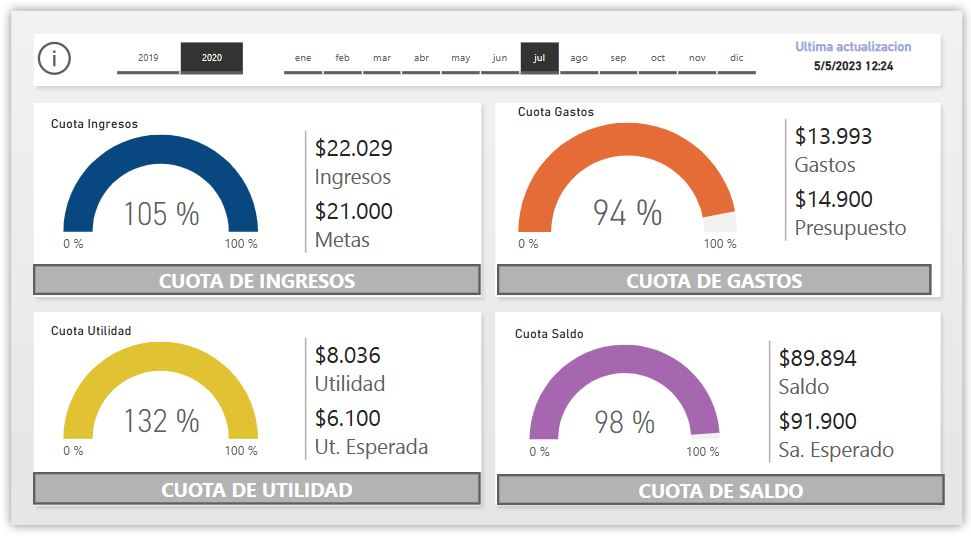
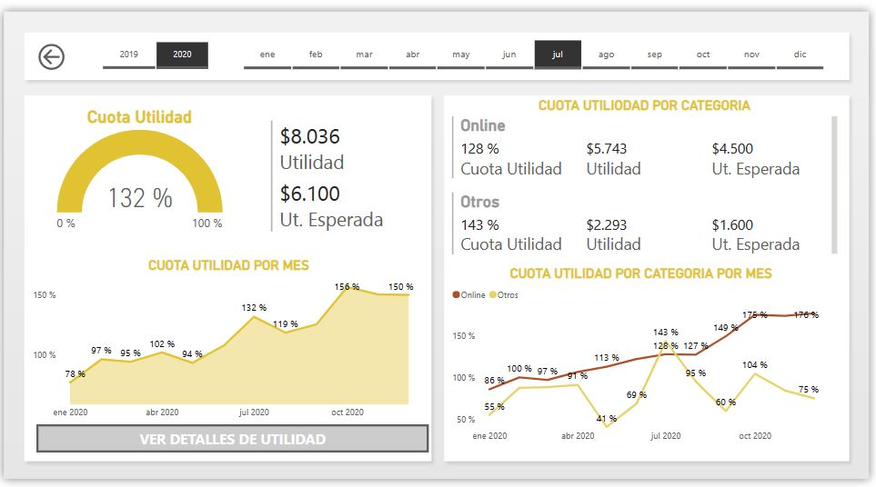
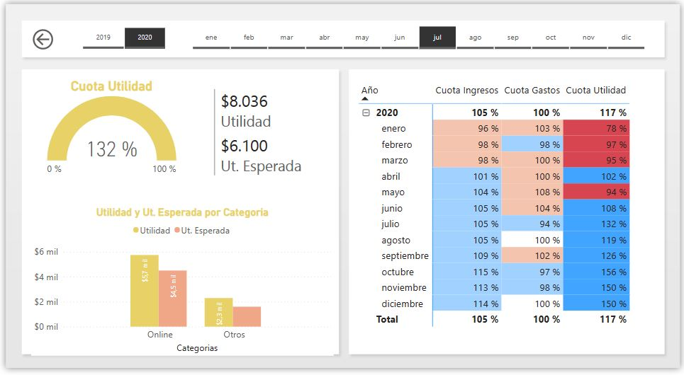
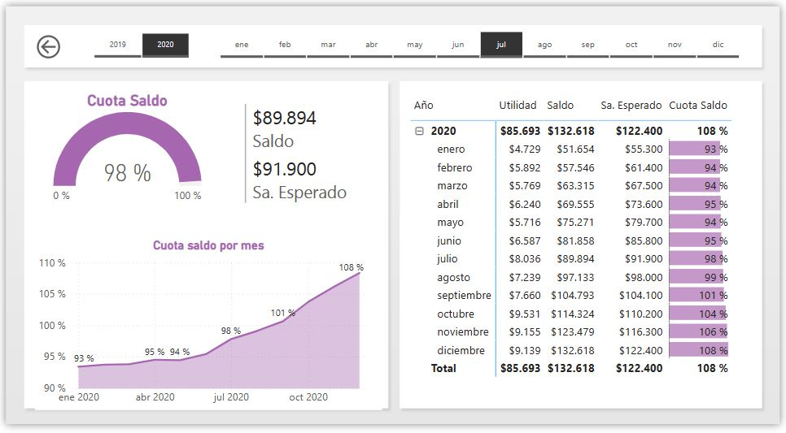

Contacto
Puedes contactarme a través de los siguientes medios:
- Email: stibenrapalog@gmail.com
- Teléfono: +504-89091504

En este proyecto, se ha desarrollado un reporte interactivo de finanzas personales que permite tener un control completo sobre los ingresos, gastos y metas financieras. El objetivo principal es proporcionar una herramienta intuitiva y sencilla de utilizar para visualizar los montos de ingresos, gastos, utilidades y saldo disponible en tiempo real. Además, se brinda la posibilidad de establecer metas de ingresos, presupuestos y expectativas financieras.
Durante el desarrollo del proyecto, se han aplicado habilidades en análisis de datos, programación y diseño de interfaces para crear una solución eficiente y práctica. El objetivo final es proporcionar a los usuarios una herramienta que les permita tomar decisiones informadas, alcanzar metas financieras y mantener una buena salud económica en la vida cotidiana.
Explora este proyecto y descubre cómo puedes tener un mayor control sobre tus finanzas personales. Este reporte interactivo te ayudará a tomar decisiones financieras más sólidas y a alcanzar tus objetivos económicos de manera efectiva.
Power Bi
Este proyecto consta de 10 informes de control. Una pagina principal en la cual se encuentran los indicadores clave de cuotas de ingresos, que comparan los ingresos con las metas establecidas, cuotas de gastos que comparan los gastos con el presupuesto, cuotas de utilidad que comparan la utilidad con la utilidad esperada, y cuotas de saldo que comparan el saldo con el saldo esperado. Estos indicadores están filtrados por año y mes. Además, esta página nos permite acceder a otros informes que ofrecen un análisis más detallado. Se presentarán algunos ejemplos de estos paneles de control.
Panel principal
Cuota de Utilidad
Detalle de Utilidad (Ver detalles de Utilidad )
Cuota de Saldo
Puedes contactarme a través de los siguientes medios: